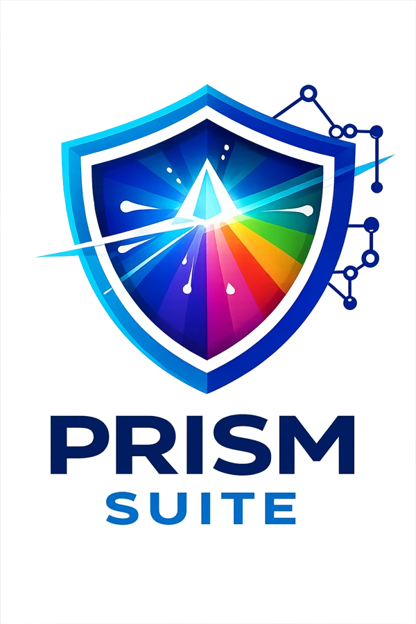
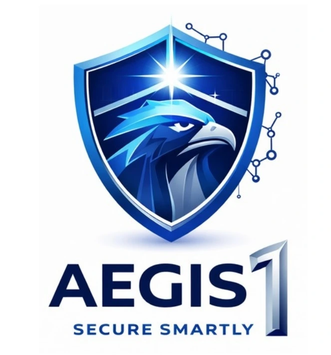

THIS IS PAC. HE IS YOUR BUSINESS.
Running
on hope.
Scroll to follow Pac ↓
Click or tap anywhere once to turn on sound.
 Let’s talk ↗
Let’s talk ↗Your ambition deserves infrastructure that keeps up. We assess, build and protect the IT behind your business.
Scroll to follow Pac ↓
Click or tap anywhere once to turn on sound.
Attacks. Failures. Data gone.

Five checks. One clear report.
Discover PrismSuiteEvery problem, ranked.

ProjectOne builds the solution.
Discover ProjectOne
AegisOne watches over you every day.
Discover AegisOne
If it happens again, PhoenixODR brings you back.
Discover PhoenixODRThreats are coming. Slice them, and let the good traffic through.
Slice red threats. Keep green traffic safe.
A quick cyber-defence game. No sign-up needed.
Explore ITCraft’s protection and recovery toolsFrom hidden infrastructure gaps to everyday security and recovery, ITCraft brings the pieces together. A clear view of where you stand. A practical path to where you want to go.
Assess your infrastructure, business needs and risks to establish a clear starting point.
Build a practical roadmap and implement the right infrastructure and security improvements.
Monitor, manage and prepare for disruption so your business can keep moving.
20+ years of expertise through IITPL, brought into a modern SME-focused approach.
Infrastructure, security and AI guidance aligned to how your organisation works.
Managed services that help monitor, assess and improve your environment.
Clear scope, coordinated delivery and practical implementation priorities.
Scalable technology designed for today’s requirements and tomorrow’s needs.
Support for organisations across Tier 1, Tier 2 and Tier 3 cities.
Enterprise thinking.
Built around the SME.
ITCraft builds on IITPL’s 20+ years of IT experience to help Indian businesses create secure, resilient and scalable infrastructure.
We bring assessment, implementation and managed services together—making technology decisions clearer and business continuity more achievable.
More about ITCraft ↗Help organisations in your network build better IT. Bring your relationships; we bring the technology and delivery expertise.
Become a partner ↗An audit helps identify hidden security gaps, performance issues and infrastructure risks. PrismSuite turns these findings into prioritised recommendations for better technology decisions.
Five outputs: infrastructure health, performance, configuration assessment, data and network security, and an actionable recommendation report. Leadership receives a management-friendly summary alongside the technical assessment.
You complete a questionnaire, an ITCraft analyst gathers system information, PrismSuite analyses the findings, and the team discusses the report and next steps with you.
Hardware and system configurations, installed software, storage, health, performance, availability and security posture. The current platform is described as using 200+ product benchmarks across 12 categories.
Findings are prioritised as Critical, High, Medium or Low. ITCraft discusses a structured action plan; the decision to proceed with implementation remains yours.
ITCraft offers a limited, one-time free IT audit to help SMEs understand infrastructure gaps. Contact the team to confirm availability and scope. Certification and specialist audit engagements are separate services.
The audit workflow focuses on system-level information, rather than the contents of business documents. You may stay present during the session. Ask the team about the exact collection scope and available on-site options.
Yes. Security and performance depend on configuration, software and the wider environment. An assessment considers the infrastructure as a whole, rather than assuming any device type is automatically secure.
No. It supports readiness by identifying infrastructure and security gaps. Formal certification and compliance audit services are scoped separately. ITCraft describes the PrismSuite assessment as valid for one year.
Yes. Contact ITCraft to scope vulnerability assessment, penetration testing or certification-related audit requirements separately from the standard PrismSuite infrastructure assessment.
Manufacturing, pharmaceuticals, chemicals, logistics, banks and NBFCs, professional services, digital agencies and other organisations that depend on data and IT.
The Authorised Tech Partner programme helps you introduce ITCraft to businesses in your network. It includes partner rewards and conversion commissions, with terms confirmed during onboarding. Explore the partner page to learn more.
Prowess ITCraft Pvt Ltd. · Mulund East, Mumbai